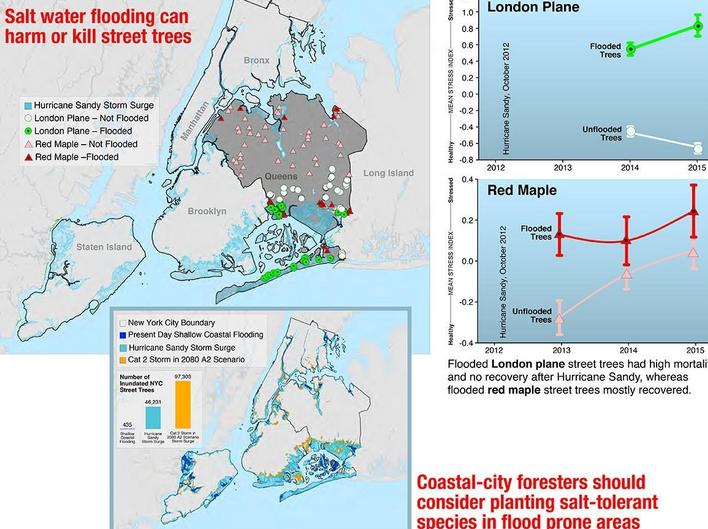
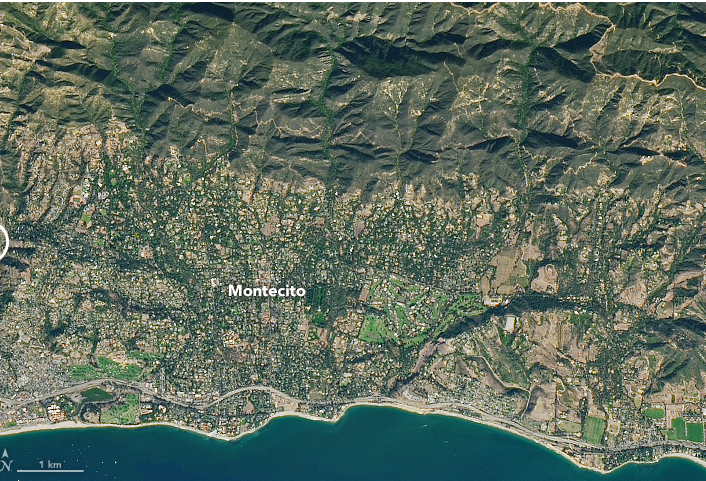
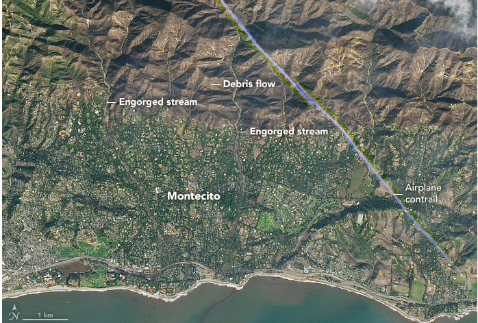

1- Salinity is an important factor for the health of the plants that live on soil. Flood waters that are coming from more or less salty waters really hurt the plant life and cause famine or at least cause economic impacts.

As can be seen from the graph, we see that the flood vegetation in Colorado, which is famous for its salty soils, has decreased.[1]
2- If the soil is in a situation that can’t handle the flood, it will move. Moving soils damage farming capacity and creature livings.


November 23 2017 [2]
January 10 2018 [2]
3- Changes of the soils that are water-saturated A plant can that it’s root lines aren’t developed enough, can die from lack of oxygen and the changing of the structure of soil (minerals, iron, organic matter’s quantity changes will reduce its chemistry activity.) [3] Besides top above, as results of the water’s drowning soil, the structure of the soil will be completely change as the environment that will be go to aerobic to anaerobic (and it will increase bacterias like Methanogens Nitrate Reducing Bacteria Iron/Manganese Reducing Bacteria Sulfate Reducing Bacteria) So the toxicity of the soil (sulfur ferric oxide and nitrate supply) will increase. And this increase will poison the plant. [4]
4- When flood waters roam through our street they can carry a lot of things with them for example when they go through cars they carry the petroleum products with them[7].Other than in areas where power plants or factories are common flooding is in way more danger.Because toxic or poisonous materials leaked from this buildings can really hurtthe environment and animal life[8].
5- The soil has a well point to humidity.A well watered soil that absorbs its humidity and the rain water, can’t accept more and water will stay at it’s (the soil’s) top. And that can cause a flood. While sandy waters can easily reach it’s humidity saturation rate, clayed soils do it hardly. The importance of this is flood management and flood preventing that can be done with following potential flood areas. Easy way to do this is using satellite technology.
Solution 1: Salinity levels of potential water sources and sea levels should always be monitored and proper measure should be taken. In high risk areas crops that are resilient to salty environments should be choised.
Solution 2: In most parts of the state, and the annual precipitation in California is 18" (457.2mm).[5]According to the Ventura County Watershed Protection District, parts of the Thomas Fire burn area had picked up 4 to 6 inches of rain in the 48 hours ending Tuesday morning.[6].We though about a system to prevent this kind of things.A massage system placed under rain measuring containers and automatically transmits a message to state forces in rain that exceeds a certain normal value.In a hour time if the rain’s volume is more than its ‘’normal’ value, it will send a signal to government's relevant officials.
Solution 3: Connecting The process of soil airding to a system or increasing matters like clay or burnt barn dung.For example managing ventilation of public lands, educating local farmers and setting standards for farmlands’s ventilation process, encouraging to using organic matters like burnt barn dung which can increase the soil’s humidity capacity with or check the soils are regularly watered.
Solution 4: Emergency drainages with filters.In areas where risk of toxic or poisonous waste is high like in chemistry factories or power plants there should be emergency drainage systems fitted with proper filters to maintain safety of surrounding soil.
Solution 5: Especially in high flood risk areas moisture of the soil should be monitored and proper soil management strategies[9] should be used for minimum damage.Easiest way to monitor the soil is using satellite data like